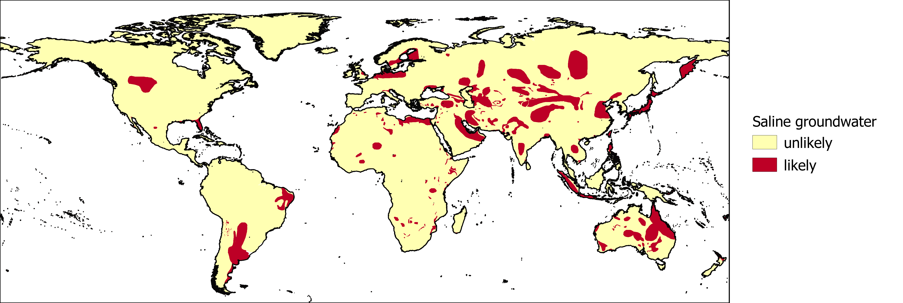

Saline or brackish groundwater may not be suitable for domestic or agricultural use without treatment. One potential source of salinity is the surrounding geology. The International Groundwater Resources Assessment Centre (IGRAC) provides a global dataset showing areas where groundwater is likely to be saline.

Map of the likelihood of saline groundwater.
Reference:
van Weert, F., van der Gun, J., & Reckman, J. (2009) Global overview of saline groundwater occurrence and genesis. IGRAC, Report nr GP-2009-1.